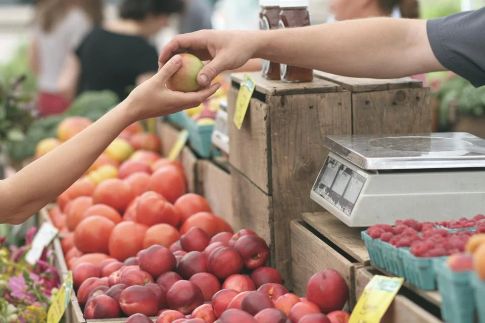
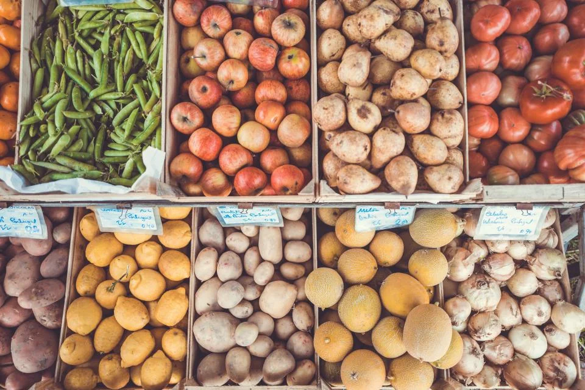

Regional
Mehr als 85 Höfe, Bäckereien und Brauereien aus der Umgebung beliefern uns direkt.
Über uns
Seit 1998 führen wir Lavendel Markt als Familienunternehmen in Musterstadt. Aus dem kleinen Laden an der Ecke ist ein moderner Frischmarkt geworden – die persönliche Art ist geblieben.
Wir verkaufen nur, was wir selbst gern einkaufen würden: frisch, ehrlich ausgezeichnet und zu fairen Preisen.

Wofür wir stehen
Mehr als 85 Höfe, Bäckereien und Brauereien aus der Umgebung beliefern uns direkt.
Faire Preise für unsere Kundschaft und faire Bezahlung für Erzeuger und Team.
Wir kennen viele unserer Kundinnen und Kunden beim Namen – und ihre Lieblingsprodukte.
Unsere Geschichte

Unser Team aus 48 Mitarbeitenden kümmert sich jeden Tag darum, dass die Regale gefüllt und die Theken frisch bestückt sind. Wir bilden selbst aus und setzen auf feste, langfristige Arbeitsverhältnisse.
Lebensmittel, die nicht mehr verkauft werden können, aber noch gut sind, geben wir an die Tafel in Musterstadt weiter. Verpackungen reduzieren wir, wo immer es geht – etwa mit Mehrwegnetzen für Obst und Gemüse.
Ob Ausbildung, Teilzeit oder Aushilfe: Wir freuen uns auf Menschen, die gern mit Lebensmitteln und Kundschaft arbeiten.
Jetzt melden